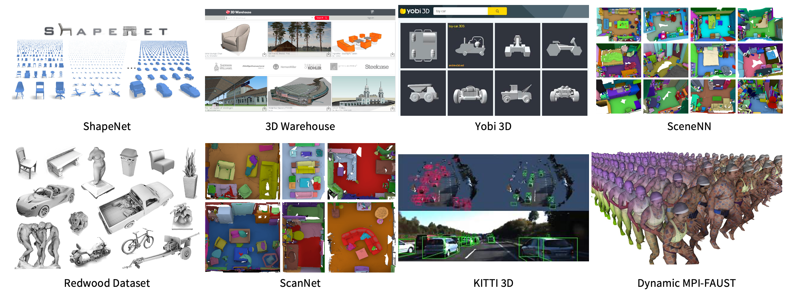

CS479: Machine Learning for 3D Data
Minhyuk Sung, KAIST, Fall 2023

Time & Location
Time: Mon/Wed 10:30am - 11:45am (KST)
Location: Online via Zoom
Description
3D Data (both 3D scans captured by depth sensors and 3D models created by designers) are widely used in many applications in computer vision, computer graphics, and robotic, such as autonomous driving, AI-assisted 3D object/scene design, augmented reality, and physical robot interaction. Along with the recent increasing demands on processing and analyzing such 3D data, there has been tremendous progress in developing novel technologies, especially based on deep learning. In this course, we will cover the recent advances in machine learning techniques for 3D data and also discuss the remaining challenges. Most of the course material will be less-than-5-year-old research papers in CVPR/ICCV/ECCV (Vision), SIGGRAPH/SIGGRAPH Asia (Graphics), and NeurIPS/ICML (Machine Learning). The course will be project-oriented (no exam, no paper-and-pencil homework, but easy programming assignment), and it will combine pedagogical lectures and seminar-style reading group presentations (followed by interactive discussions).
Prerequisites
This course is intended for undergraduate/master students who have a basic background in deep learning and experience with PyTorch.
Course Staff
Instructor: Minhyuk Sung (mhsung@kaist.ac.kr)
Course Assistants:
- Juil Koo (63days@kaist.ac.kr)
- Hyunjin Kim (rlaguswls98@kaist.ac.kr)
- Kunho Kim (kaist984@kaist.ac.kr)
- Jaihoon Kim (jh27kim@kaist.ac.kr)
- Seungwoo Yoo (dreamy1534@kaist.ac.kr)
- Yuseung Lee (phillip0701@kaist.ac.kr)
Office hours (Offline): Mon 7:00pm (KST). N1 Rm 601.
Past Years
- CS492(A): Machine Learning for 3D Data (Spring 2022)
- CS492(H): Machine Learning for 3D Data (Spring 2021)
Grading
- Programming Assignments: 30%
- Project: 50%
- Paper/Project Reviews: 10%
- In-Class Participation: 10%
AI Coding Assistant Tool Policy
You are allowed (and even encouraged) to utilize AI coding assistant tools, such as ChatGPT, Copilot, Codex, and Code Intelligence, for your programming assignments and projects. Utilizing AI coding assistant tools will not be deemed as plagiarism. However, it is still strictly prohibited to directly copy code from the Internet or from someone else. Doing so will lead to a score of zero and a report to the university.
Important Dates
ALL ASSIGNMENTS ARE DUE 23:59 KST. (Subject to Change)
- Project Sign-Up: Due Sep 8 (Fri)
- 1st Programming Assignment: Due Sep 17 (Sun)
- Project Proposal: Due Sep 24 (Sun)
- 2nd Programming Assignment: Due Oct 9 (Mon)
- Project Mockup: Due Oct 9 (Mon)
- Project Pitch Video: Due Oct 20 (Fri)
- Project Interim Report 1: Due Nov 5 (Sun)
- Paper Review Questions: Due Nov 12 (Sun)
- 3rd Programming Assignment: Due Nov 12 (Sun)
- Project Interim Report 2: Due Nov 19 (Sun)
- Paper Review Answers: Due Nov 26 (Sun)
- Project Poster: Due Nov 29 (Wed)
- Project Report/Code: Due Dec 3 (Sun)
- Project Review: Due Dec 9 (Sat)
- Project Rebuttal: Due Dec 13 (Wed)
Paper List
Schedule
(Subject to Change)
| Week | Mon | Topic | Wed | Topic |
|---|---|---|---|---|
| 1 | Aug 28 | Course Introduction Slides Recording |
Aug 30 | 3D Representations 1 Slides Recording |
| 2 | Sep 04 | 3D Representations 2 Slides Recording |
Sep 06 | 3D Representations 3 Slides Recording |
| 3 | Sep 11 | Point Cloud Encoders Slides Recording |
Sep 13 | Point Cloud Generation Slides Recording |
| 4 | Sep 18 | Implicit Neural Representations Slides Recording |
Sep 20 | Structure from Motion 1 Slides Recording |
| 5 | Sep 25 | Structure from Motion 2 / Neural Rendering 1 Slides Recording |
Sep 27 | Neural Rendering 2 Recording |
| 6 | Oct 02 | No Class (Substitute Holiday) | Oct 04 | No Class (Conference Trip) |
| 7 | Oct 09 | No Class (Hangul Day) | Oct 10 | Guest Lecture 1 Niloy J. Mitra Professor at UCL Oct 10 (Tue) 4:00 p.m. Offline (E3-1, Rm 1101) |
| 8 | Oct 16 | No Class (Midterm Week) | Oct 18 | No Class (Midterm Week) |
| 9 | Oct 23 | Project Pitches Video Compilation |
Oct 25 | Hybrid Representations 1 Slides Recording |
| 10 | Oct 30 | Hybrid Representations 2 Recording |
Nov 01 | Diffusion Models 1 Slides Recording |
| 12 | Nov 06 | Diffusion Models 2 Slides Recording |
Nov 08 | Conditional Generation Slides Recording |
| 11 | Nov 13 | 3D Generation Slides Recording |
Nov 15 | No Class (Break) |
| 13 | Nov 20 | 3D Detection/Segmentation Slides Recording |
Nov 22 | Guest Lecture 2 Jun Gao Research Scientist at NVIDIA Toronto AI Lab Nov 22 (Wed) 10:30 a.m. Online (Zoom) |
| 14 | Nov 27 | Rotation Invariance/Equivariance Slides Recording |
Nov 29 | No Class (Undergraduate Admission Interviews) |
| 15 | Dec 04 | Poster Presentations 1 | Dec 06 | Poster Presentations 2 |
| 16 | Dec 11 | No Class (Final Week) | Dec 13 | No Class (Final Week) |